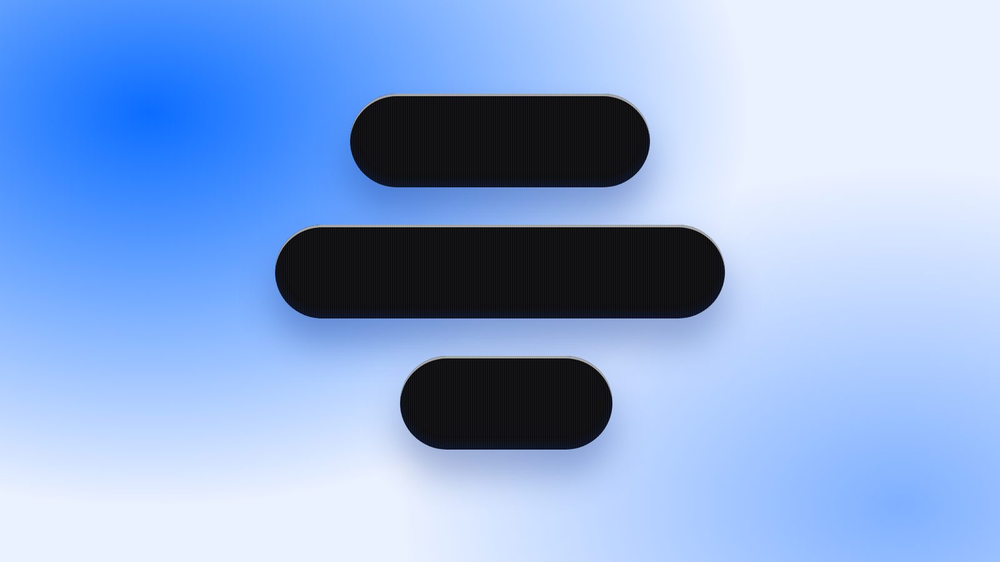
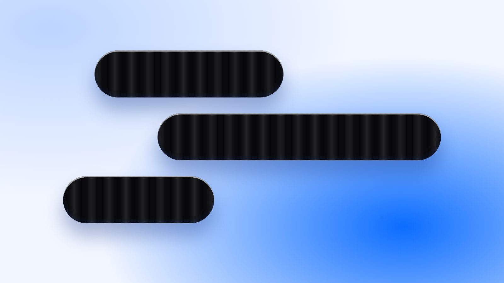
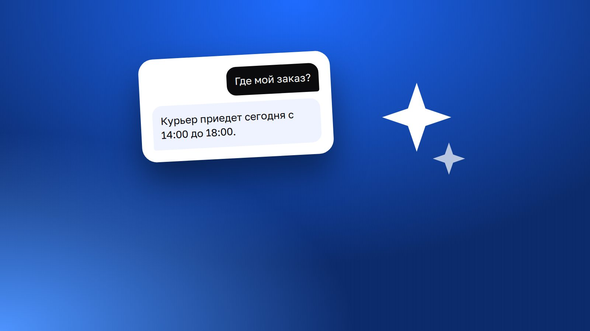
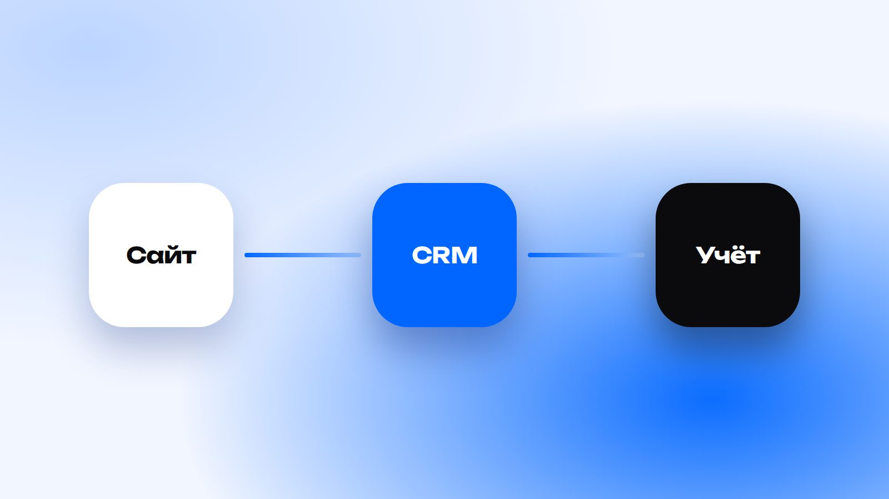
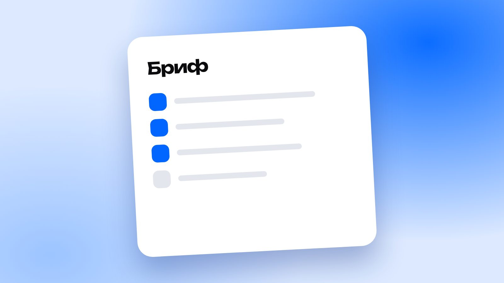
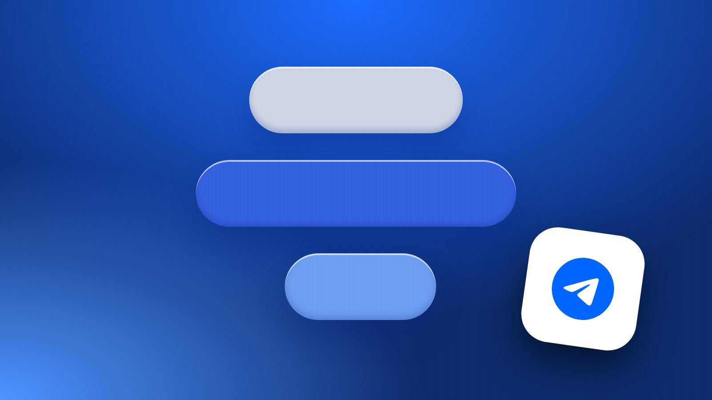
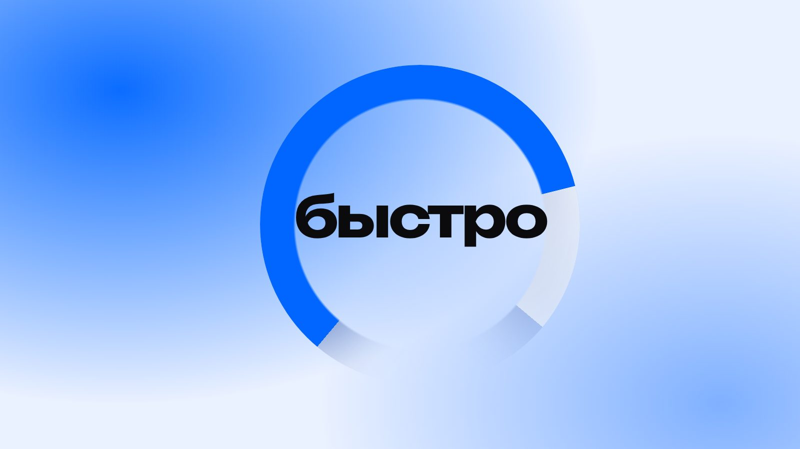
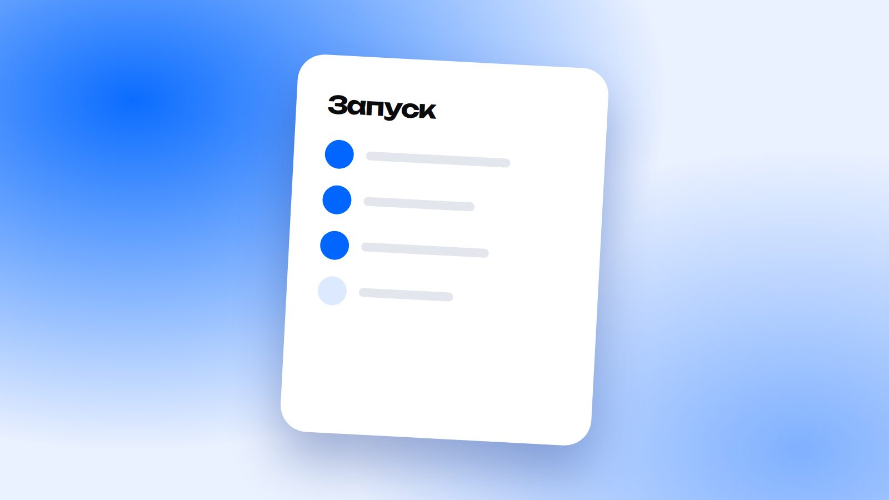

Заявки48
В работе17
Оплачено312 тыс.
Сайт, который за десять секунд показывает, чем вы полезны, и приносит заявки.
ПодробнееПриложение в App Store, Google Play и RuStore — чтобы клиент всегда был под рукой.
ПодробнееБот принимает заявки, записывает клиентов и берёт оплату — прямо в Telegram.
ПодробнееИИ-ассистент на ваших данных: отвечает клиентам, разбирает документы, пишет сводки.
ПодробнееПоднимаем сайт в поиске и следим за репутацией — чтобы клиент находил вас первым.
ПодробнееЗаметки о сайтах, ботах и автоматизации, а также новости, которые касаются вашего бизнеса в интернете.
 Новости
НовостиСогласие теперь оформляется отдельным документом. Что это значит для сайта, формы заявки и штрафов.
 Гайды
ГайдыЧто спросить, на что смотреть и какие признаки говорят, что с исполнителем лучше не работать.
 Разборы
РазборыРегистрация, личный QR-билет и проверка на входе с телефона. Разбираем схему и подводные камни.

РазборыКакие способы приёма платежей бывают, чем отличаются и как выбрать подходящий.
 Гайды
ГайдыРазбираем, за что вы платите на самом деле, и почему два сайта «на одну тему» стоят по-разному.
 Гайды
ГайдыКогда кабинет экономит время клиенту и вам, а когда это лишняя сложность.

ГайдыБольшинство людей открывает сайты с телефона. Как сделать, чтобы им было удобно.
 Разборы
РазборыСравниваем два формата по скорости запуска, возможностям и удобству для клиента.

ГайдыКак внедрить нейросеть в поддержку без хаоса: база знаний, границы ответственности и передача человеку.
 Разборы
РазборыВыбор услуги, времени и напоминания: что нужно, чтобы запись шла без звонков и переписки.
 Гайды
ГайдыОдна страница под одну цель против полноценного сайта компании. Когда что работает лучше.

ГайдыЗаявка с сайта не должна теряться. Пять способов связать форму, Telegram и учёт.

ГайдыЧек-лист из пяти вопросов, которые экономят неделю переписки и дают честную смету.

РазборыВеб-интерфейс внутри мессенджера: каталог, запись и кабинет без установки приложения.

ГайдыПять практичных шагов, которые ускоряют сайт без переписывания всего с нуля.

ГайдыКороткий список из основных проверок, которые спасают от неприятных сюрпризов после запуска.
Попробуйте другое слово или сбросьте рубрику.
Опишите задачу в паре предложений — вернёмся с планом, сроками и оценкой.
Нажимая на кнопку, вы переходите в Telegram. Данные обрабатываются на условиях согласия и политики конфиденциальности.
© 2026 Antviz